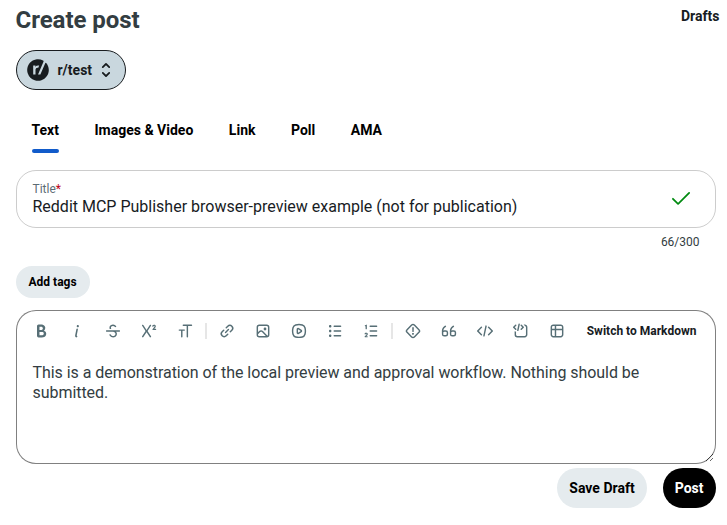

Read Reddit
Threads, inbox, rules, flairs, account activity and notification notices. Check eligibility signals before preparing a draft.
Reddit MCP Publisher gives Claude Desktop, Codex and other MCP clients access to your own Reddit session. Read threads and rules, prepare a post or reply, review the browser preview, then approve publication.
Node.js 22+ and Chrome/Chromium required. The core browser workflow does not need a Reddit developer API key.
Choose an MCP client during setup or use --client claude / --client codex. Your Reddit sign-in stays in your own browser profile.
Threads, inbox, rules, flairs, account activity and notification notices. Check eligibility signals before preparing a draft.
Prepare a post, comment or edit for an exact destination. Inspect the real Reddit composer before publishing.
Read conversations and prepare messages for verified recipients, with support for some attachments and retry-state checks.
Check rules and context, and bind a draft to the intended subreddit, comment or recipient.
The tool fills the live Reddit form so the exact content and destination can be reviewed.
The approved write is submitted and its status recorded. Ambiguous outcomes are not blindly reposted.

Maintainer-run preview on 2 November 2026. No post was sent for this test. Method and limits.
Yes for the core browser workflow. You still need to sign in to your own Reddit session and follow Reddit's policies.
Yes, with a locally configured MCP client and authenticated browser session. Review the preview and approve the consequential action.
No. Chrome/Chromium is required for login, live browser previews and writes. LightPanda may be used for supported reads.
No. Subreddit rules, account restrictions, moderation and changes to the Reddit UI can interrupt publication.
No. Sign in through your own browser, keep credentials and keys private, and protect your server.